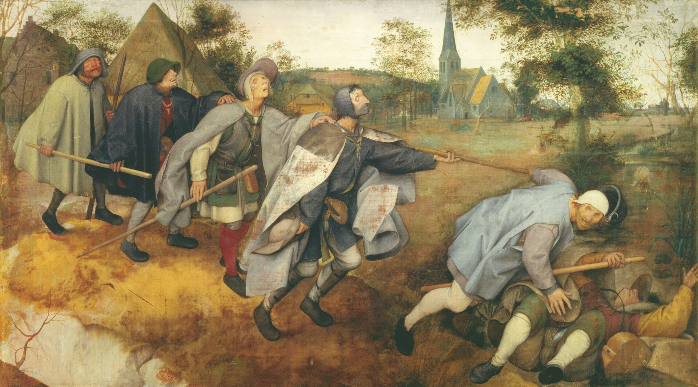
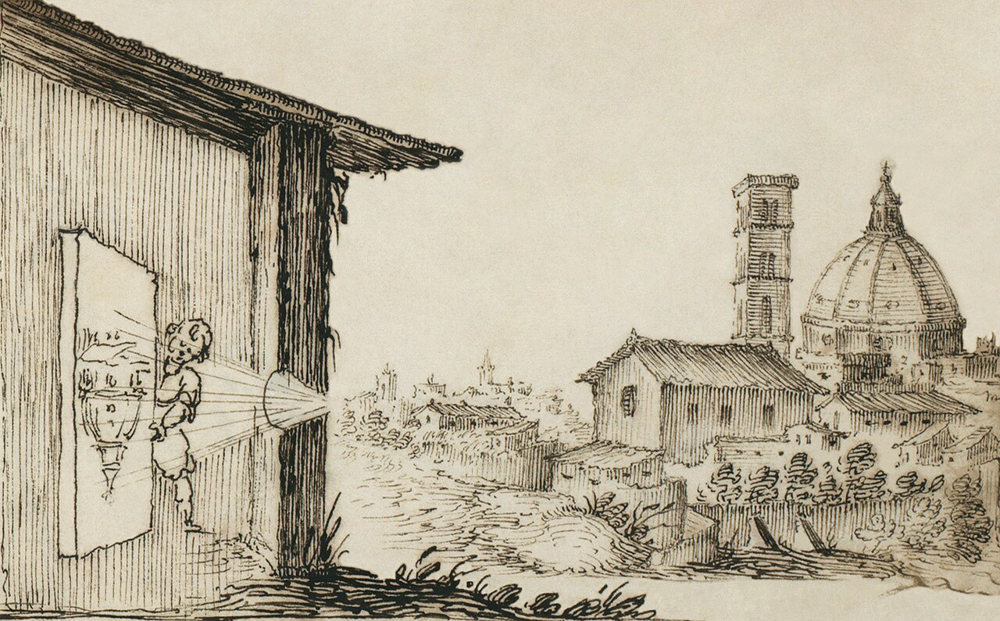
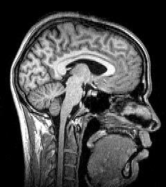
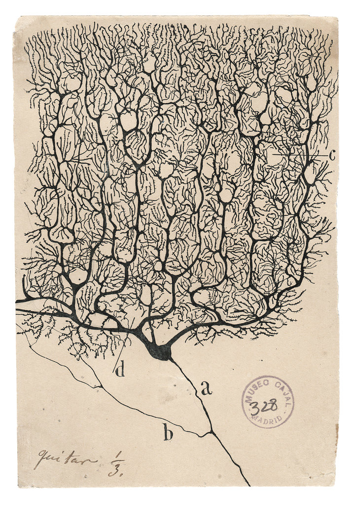

“The world is not what I think, but what I live through.”Maurice Merleau-Ponty, philosopher of perception
You have had this argument. Two people who love each other stand in the same kitchen, replaying the same evening, and each remembers it so differently that one of them must surely be lying. Neither is. Before this chapter ends you will understand why — and the reason runs far deeper than memory, deeper than stubbornness. It reaches all the way down to a single, disorienting fact that almost no one is taught, though it shapes every waking moment of their lives:
You have never once perceived the world. You have only ever perceived your brain’s rendering of it — and that rendering is something the brain must build, out of guesses, in the dark.
We who have spent our lives studying the mind do not say this to unsettle you. We say it because, properly understood, it is one of the most useful and even merciful pieces of self-knowledge a human being can carry. It will explain why you and someone you love can live in different worlds. It will explain something about your own anxiety, or your low days, or the grudge you cannot put down. And it begins, as the mind’s truths so often do, not with a theory but with a single human life.
His name, in the account left to us by the neurologist Oliver Sacks, was Virgil. He had been blind since early childhood. For some forty-five years he had known the world through his hands, his ears, the warmth of the sun — and out of those he had built a life that worked. Then, in middle age, surgeons removed the cataracts that had sealed his eyes, and for the first time in nearly half a century, light reached his retinas. Everyone expected a miracle. What happened instead is one of the most important things medicine has ever taught us about the mind.
The bandages came off. Virgil turned his open eyes toward the surgeon’s face — and saw nothing he could understand. Not darkness; he was no longer blind. He saw a blare of light, a chaos of colour with no edges, no objects, no meaning. He heard a voice and knew a face must be there, but he could not see a face; he had to wait for the voice to tell him where to look. In the weeks that followed he stumbled through a world that organises itself effortlessly, for the rest of us, into chairs and stairs and the faces of those we love — and for him refused to organise at all. His eyes worked perfectly. His brain had never learned to see.
Sit with that, because everything follows from it. The eye is only a camera, and Virgil’s camera was now flawless. Yet sight did not come — because seeing was never the eye’s achievement. It is the brain’s. And a brain that had spent its whole life building the world from touch and sound had no machinery ready to turn light into meaning. The miracle failed not because the gift was small, but because we had all misunderstood, for centuries, what the gift even was.
Seeing is not something the eyes do to you. It is something the brain does — and, as Virgil’s life made unbearably plain, something it must build.
So here is the question that will run beneath this entire chapter, the thread to follow to the end: if you have never touched reality — if you live inside a world your brain constructs — then what, exactly, are you living inside? And can you change it? Hold that question. We will earn the answer.
The Lineage of the IdeaA Physician’s Quiet Heresy

The suspicion is old. In our own lineage it surfaces most clearly in Berlin in the 1860s, with Hermann von Helmholtz — one of those formidable minds who seemed to found a science before breakfast. He studied the eye with a physicist’s cold precision, and what he found embarrassed common sense. The image cast on the retina, the light-sensitive wall at the back of the eye, is by any fair measure a ruin. It is upside down. It is flat. It trembles as the eye flicks about. And it has a literal hole in it, a blind gap where the optic nerve punches through and no light is recorded at all.
From this ruin we somehow enjoy a seamless, upright, richly coloured world in depth. Between the ruin and the richness, Helmholtz understood, an enormous labour of guessing must be taking place. He named it unconscious inference.
Unconscious inference — Helmholtz’s term for the mind’s habit of guessing, instantly and beneath all awareness, what in the world most likely produced the messy signals striking the senses. “Inference” means a reasoned guess; “unconscious” means you never catch yourself making it.
It took a century and a half — and machines able to model the brain’s arithmetic — for the rest of us to grasp how completely right he was. His idea has since grown into the leading account of how the whole brain works. The neuroscientist Anil Seth gives it a phrase no one forgets: perception, he says, is a controlled hallucination. We will earn that startling word carefully, because hallucination must never be used loosely by people whose work is the care of minds.


The Idea, Stated PlainlyA Hallucination That Behaves Itself
Let us be careful. To hallucinate, in ordinary speech, is to perceive what is not there. The science of recent decades makes a stranger claim: that this is the condition of all perception, always. Your brain is forever generating the world from the inside. What separates your everyday seeing from a clinical hallucination is not that yours comes from the world and theirs from within — both come from within. The difference is that yours is being held to account, instant by instant, by signals arriving through the senses. As Seth puts it: “When we agree about our hallucinations, we call that reality.”
Picture the brain as a painter shut in a windowless room, who has never once been outside, painting the landscape from nothing but faint knocks on the walls. The knocks are the senses. The painter makes a swift, confident guess, commits it to canvas, and revises only when a knock arrives that the painting failed to anticipate. Most knocks are anticipated, so most of the time almost nothing needs revising. That is exactly why perception feels instant and effortless — and why you can flinch from a swerving car before you have consciously “seen” it. The construction is finished before awareness arrives. You live a heartbeat behind, inside your brain’s best guess of now.
This is no longer mere theory. Do not take it on our authority — make your own brain confess.
There is a real hole in the back of each eye, where the optic nerve departs and no light sensors lie. You have a blind spot in your vision at this very moment, and you have lived your whole life without seeing it — because the brain quietly fills it with a guess. Let us catch the guess in the act.
The dot did not dim or blur. It simply ceased to be, and the gap was seamlessly filled with more background. Your brain did not show you “missing data.” It showed you a confident invention — “more background, presumably” — and never confessed that it had invented anything. That small, faintly unsettling moment is, in miniature, how you perceive everything. And it raises an obvious objection — the one that decides whether this whole idea is true.
The Objection That Matters“Then Why Am I Ever Surprised?”
Here is the question a sharp reader should be asking, and it is the strongest objection to everything we have said. If the brain simply paints whatever it expects, why is it ever wrong? Why do I trip on the unexpected step, gasp at the plot twist, jump when the door slams? If perception were just the brain’s own prediction, I would live sealed inside my expectations, and nothing could ever surprise me. But things surprise me constantly.
Good. That objection does not break the theory — it reveals its beating heart. The answer is that the brain does not want to paint whatever it expects. It wants to paint what is true, and it has exactly one tool for finding out when it is wrong: the gap between what it predicted and what the senses actually report. Scientists call that gap prediction error — the surprise — and it is the single most precious signal in the brain.
Prediction error — the difference between what your brain expected and what your senses delivered. It is not noise to be ignored; it is the one piece of news the brain genuinely needs. Everything you learn, you learn from it.
So surprise is not the system failing. Surprise is reality getting in. The slammed door makes you jump precisely because the brain failed to predict it, and that failure is allowed to seize your whole body in an instant — because a creature that ignored the unpredicted did not survive to become your ancestor. Far from disproving the theory, your every surprise is the theory caught in the act of working: the world, refusing the brain’s guess, forcing a correction. Keep this in your pocket, because it will shortly explain something tender about the human heart — and something about why certain minds suffer.
The MechanismThe Loop That Runs Beneath Your Life
Put prediction and prediction-error together and you have the loop that, on the current evidence, runs the entire brain. It turns many times a second, your whole life, almost always beneath notice. We call it predictive processing, and it works in four beats. The brain predicts what the senses are about to report; the senses arrive, and the brain compares; only the gap between guess and reality — the prediction error, the surprise — is passed back upward; and the brain updates, so that the corrected guess becomes the very thing you see. A brain whose predictions are good barely labours at all — which is exactly why a familiar room feels effortless, and a strange city, where nothing is yet predicted, leaves you exhausted by nightfall.

This single loop quietly explains a great deal. It is why you stop hearing the hum of the refrigerator — once predicted, it generates no surprise and fades from awareness — yet snap to attention the instant it stops. And it is why grief so often arrives not as one blow but as a thousand small ambushes. The brain has not yet updated its model of a world that still contains the person you lost; so it keeps predicting their footstep on the stair, their key in the door — and each time the senses return only silence, the prediction error lands as fresh pain. You mourn with the very same machinery you see with. We do not merely think with this loop. We love and lose with it too.
“When you open your eyes, what actually happens?”
One phenomenon. Six lifetimes of looking at it. None of these voices is wrong; none alone is sufficient. This is how the mind must be approached — from every side at once.
“Far more wiring carries predictions down toward the senses than carries signal up from them. Perception is mostly the brain talking to itself, lightly corrected by the world. The eye does not send a picture. It sends a critique of the brain’s picture.”
“I have watched this break in living people — in stroke, in dementia, in failing sight. When the construction falters you see, with terrible clarity, that ‘reality’ was always an accomplishment, never a given. My patients do not lose the world. They lose the brain’s ability to build it.”
“And the brain does not predict coldly. It predicts what it wants and what it fears. We see faces in the dark when afraid, and the beloved in a stranger’s gait when longing. What you see is partly a confession.”
“Then the ancient worry was sound. Kant said we never reach the thing-in-itself, only its appearance to us. The neuroscientist has now measured the veil the philosopher only suspected.”
“Useful — but let us not get drunk on it. ‘The brain predicts’ can be stretched to explain anything, and a theory that explains everything explains nothing. The strong claim — that all cognition is prediction-error correction — is elegant and still unproven. A working map, not gospel.”
“Whatever the mechanism, here is what matters for a life: if you build your world, you bear some responsibility for how you build it. The bitter man and the grateful man stand in the same street and genuinely see two different streets. That is a sentence of guilt — and an offer of freedom.”
The Hook, Paid OffTwo People, One Room, Two Worlds
Now we can return to the couple in the kitchen. If perception is private construction, why do we so seldom catch it diverging? Because brains shaped by the same world mostly make the same guesses, and so we agree, and the agreement feels like shared reality. But now and then the guess shows.
In 2015 a photograph of an ordinary dress split the world in two: some saw it, beyond all argument, as blue and black; others, just as certainly, as white and gold — from the very same pixels. The reason is a gift the brain exercises silently at every moment. It must judge an object’s colour while also guessing what light is falling on it, then subtract the lighting away — so a white shirt reads as white at noon, at dusk, and under a lamp. The dress was lit ambiguously; no one could tell from the image whether it stood in cool shade or warm indoor light. So each brain guessed the lighting — cool daylight, and it subtracted blue and saw white-and-gold; warm light, and it subtracted gold and saw blue-and-black. No one was wrong. Everyone was guessing. The fight was never about a dress. It was two construction-engines, fed by two different lifetimes of light, disagreeing in public.
And there is the kitchen. Two people did not record the same evening and store different copies. They built two different evenings in the first place — each from a different history of being loved, being hurt, being braced for which words mean danger. The dress is trivial. The principle it reveals is among the most important in this book, and we will meet it again in every volume: two people in one room can honestly live in two different worlds, and neither is lying. Hold that, and a great deal of human cruelty starts to look like something sadder and more forgivable — two brains, each certain it is simply seeing what is there.
(If you doubt how forcefully one sense overrules another, find the “McGurk effect” online: a voice saying “ba” dubbed over lips mouthing “ga” is heard as a third sound, “da.” Close your eyes and the true “ba” returns. Knowing the trick does not free you from it — the construction runs beneath the part of you that knows.)
Where It Touches Your LifeWhen the Brain’s Best Guess Becomes Suffering
Until now this might feel like a wonder of the laboratory. It is not. The same machinery that builds your visual world builds your emotional one — and when its guesses go wrong, they go wrong in shapes you will recognise, perhaps painfully. Here is where the science stops being about dresses and starts being about you.
Begin with a word the brain leans on constantly: a prior — a standing expectation, built from everything that has happened to you, that shapes what you predict next.
A prior — the brain’s accumulated assumption about how things usually go, carried into each new moment. Strong priors let you act fast on little evidence. The danger is when a prior grows so strong that no amount of contrary evidence can move it.
An anxious brain runs its threat-predictions too hot. It assigns danger to a quiet room, a delayed reply, a faint pain in the chest — predicting catastrophe and then feeling the prediction as if it were already happening. This is why reassurance so often bounces off: you are not arguing with the facts the anxious person sees, but with the world their brain has already built, in which the threat is real and present. Anxiety, in this light, is not weakness or foolishness. It is perception — the construction of a dangerous world — running ahead of the evidence.
If anxiety is a threat-prediction too loud, much of depression looks like a prior gone too dark and too rigid to update. The brain has concluded that the world is bleak, that effort is futile, that good things “don’t count” — and then it discounts the very evidence that might lift the verdict. A kindness is explained away; a success feels hollow; tomorrow is predicted to be as grey as today. Recall the great principle: surprise is how reality gets in. In depression it is as if the door to surprise has been sealed — the world can no longer break through to correct the guess. To be depressed is, in part, to be trapped inside an old prediction that the present is no longer allowed to revise.
A man who came home from a war sits in my office and tells me, with shame, that a car backfired in the street and he was on the ground before he knew he had moved — heart hammering, certain, for one annihilating second, that he was being shot at. He knows there is no war here. He can say so plainly. And still his body does not believe him. I tell him what I have come to understand: that his nervous system learned, under conditions where the lesson was true, to predict death from a sudden sound — and that the prediction has outlived the war. It is not madness. It is a guess that was once correct and has not yet been allowed to update. Trauma, I tell him, is a prediction of danger that has outlived the danger. His eyes fill — not at the horror, which he knew, but at the relief of being, for once, understood rather than judged.
A composite vignette. The principle — that the traumatised body keeps bracing for a threat that is over — runs throughout the modern science of trauma.
The same lens reaches into corners of life we rarely call “psychology” at all. Prejudice is, at bottom, a prior about a person you have not yet met — the brain rendering a stranger through a model assembled long before they arrived, so that you do not see them so much as your prediction of them. And the placebo is the most astonishing case of all: predict relief firmly enough — a kind doctor, a confident pill — and the brain can dampen real pain, shift real biology. Its dark twin, the nocebo, can manufacture real sickness from the expectation of harm. We will give these a whole chapter later in the series, but mark the principle now, because it is staggering: a prediction, held strongly enough, can become flesh.
Anxiety is a brain predicting a danger that has not come. Depression is a brain that can no longer predict the dawn. Trauma is a prediction of danger that has outlived the danger.
When the Construction ShattersThe Brain That Cannot Stop Painting
Push the principle to its edge and you reach some of the most haunting conditions in medicine — which suddenly make a kind of sense.
An elderly woman, sharp and entirely sane, her sight failing to macular degeneration, lowers her voice and tells me, ashamed, that she has begun to see things: small figures in old-fashioned dress descending a staircase that is not there, ribbons of vivid pattern crawling the walls. She is terrified she is going mad. I am able to give her one of the quiet gifts of this work — the relief of a name. This is Charles Bonnet syndrome. Her mind is not diseased; it is doing precisely what every mind does, generating a world — but as the correcting signal from her eyes fades, the prediction runs on unchecked, a projector still throwing images though the film of reality has worn thin. “Your brain,” I tell her, “is making its own entertainment in the growing dark.” She weeps, not now with fear, but with the ordinary mercy of being understood.
A composite vignette, in the tradition of Oliver Sacks, who lived this condition himself.
The same logic lights up the phantom limb — the vivid, often agonising presence of an arm or leg that is gone. The brain holds a deep, settled prediction of a whole body; when the limb is lost, the prediction outlives the flesh, and the person goes on feeling a hand that is no longer there. And at the far edge lies the frontier of psychiatry itself.
A growing body of work reframes some symptoms of conditions such as schizophrenia as a disturbance of this very loop — a brain that trusts its own predictions too heavily and the correcting evidence of the senses too little, so that inner expectation bleeds outward and is lived as a voice in the room or a vision on the wall. We offer this as a promising map, not a verdict; the brain surely does more than prediction-error correction, and serious people still argue how literally to take it. We say it because it shows how one humane idea reaches from a parlour trick to the depths of suffering — and we hold it the way good clinicians hold all such ideas: provisionally, never as a substitute for the person in front of us.
If this feels obscurely familiar, it may be because humanity has suspected it for millennia, long before the language of neurons. Plato imagined prisoners in a cave mistaking shadows for reality. The traditions of India speak of māyā, the veil of appearance over a deeper truth. Across cultures runs the same intuition — that the seen world is a kind of dream. These are not scientific claims and we will not dress them as such. But they are evidence that human beings have always sensed, in their depths, that perception and reality are not the same. Neuroscience did not discover this. It measured what the sages felt.
Myth vs. RealitySetting the Record Straight
What Nearly Everyone Believes
“My senses show me the world as it truly is. Seeing is believing. If I witnessed it with my own eyes, then it happened exactly that way — and the more certain I feel, the more likely I am right.”
What a Lifetime of Evidence Shows
Your senses show you a swift, useful construction, shaped by your history, your fears, even your hopes. Sincere, certain eyewitnesses are wrong all the time — not from dishonesty but because the brain builds rather than records. “I saw it myself” opens an inquiry; it never closes one. And certainty is no guide: it is simply a prediction that has not yet been corrected.
The Answer to Our QuestionThe Mercy — and the Freedom — Hidden in the Mechanism
We opened with a question: if you have never touched reality, what are you living inside — and can you change it? We can now answer both halves.
What you are living inside is a controlled hallucination — and the word that matters is controlled. Your world is not free-floating fantasy. It is disciplined, every waking second, by genuine contact with a genuine world through the senses. You still catch the ball, cross the road, find the face you love in a crowd. Reality keeps its steady grip on you through the one channel it cannot be shut out of: surprise. You are not adrift.
And can you change it? Here is the part we find most moving, and it is not a platitude — it is the mechanism turned to use. If your suffering is, in part, a prediction grown too strong and too rigid to update, then healing is the slow, deliberate work of feeding the brain the evidence that finally moves the prediction. This is not a metaphor. It is, in plain terms, how good therapy works. When a person terrified of crowds is supported to stand in one and survive it, again and again, they are forcing prediction error into a brain that had sealed the door — until the catastrophe it kept forecasting fails to arrive often enough that the forecast itself, at last, revises. The anxious prior loosens. The traumatised body, given enough safe repetitions, begins to believe the war is over. We are, quite literally, in the business of helping the brain update its guess about the world.
And there is a quieter freedom in it for anyone, patient or not. The existentialist at our table was right: if you partly build the world you inhabit, you carry some responsibility for how you build it — whether you render your days in the colours of grievance or of gratitude, threat or possibility. You cannot simply decide to see differently, any more than you can will the blind spot away. But you can choose, over time, what evidence you stand in front of, what you rehearse, what you let surprise you. That is a small power. It is also, perhaps, the only one perception leaves us — and it is the seed of everything else this series will explore. The mechanism, understood, hands you back a sliver of freedom. That is where our work always aims to return: not to a fact about the brain, but to a possibility for the person.
We’re all hallucinating all the time. It’s just that when we agree about our hallucinations, we call that reality.
The lines worth carrying out of this chapter.
- You live a heartbeat behind, inside your brain’s best guess of now. Seeing is the brain’s achievement, not the eye’s — which is why Virgil’s flawless eyes could not give him sight.
- Surprise is not the system failing. Surprise is reality getting in. The gap between what you expect and what you get is the one signal that teaches the brain anything at all.
- You mourn with the same machinery you see with. Grief is a thousand failed predictions of a footstep that will not come.
- Anxiety predicts a danger that hasn’t come; depression can no longer predict the dawn; trauma is a prediction of danger that outlived the danger. Much suffering is a guess grown too strong to update — and healing is the slow work of updating it. This is why therapy works.
- Two people in one room can honestly live in two different worlds — and neither is lying. Certainty is not a measure of truth; it is only a prediction that has not yet been corrected.
If you keep one sentence: you do not see the world — you see your best guess about it — and with patience, evidence, and mercy, you can come to make a better guess.
Research ReferencesSources & Notes
- ReferenceSacks, O., “To See and Not See,” in An Anthropologist on Mars (1995) — the case of Virgil; and Hallucinations (2012) on Charles Bonnet syndrome.
- ScienceSeth, A., Being You: A New Science of Consciousness (2021); TED talk “Your brain hallucinates your conscious reality” (2017).
- Historyvon Helmholtz, H., Handbook of Physiological Optics (1867) — unconscious inference.
- ScienceClark, A., “Whatever next? Predictive brains, situated agents, and the future of cognitive science,” Behavioral and Brain Sciences (2013); and Surfing Uncertainty (2016).
- ScienceLafer-Sousa, R., Hermann, K. & Conway, B., “Striking individual differences in color perception … #TheDress,” Current Biology (2015).
- Sciencevan der Kolk, B., The Body Keeps the Score (2014) — trauma as a body braced for a danger that is over.
- DebatedFriston, K., “The free-energy principle,” Nature Reviews Neuroscience (2010); predictive-processing accounts of anxiety, depression & psychosis — promising and still contested.
Citations support the science presented; a production edition would carry full bibliographic detail and DOIs, externally verified.
Going FurtherRecommended Books & Viewing
Read
- Anil Seth, Being You (2021)
- Oliver Sacks, An Anthropologist on Mars (1995) & Hallucinations (2012)
- Bessel van der Kolk, The Body Keeps the Score (2014)
- Andy Clark, Surfing Uncertainty (2016) — demanding, for the keen
Watch
- Anil Seth, “Your brain hallucinates your conscious reality” (TED, 2017)
- The McGurk effect — BBC Horizon (try it with eyes open, then closed)
- Documentaries on Oliver Sacks and his patients